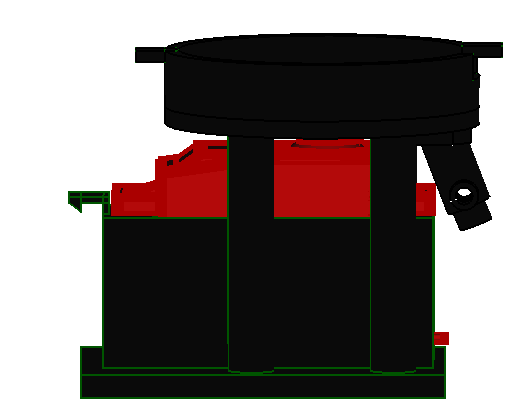
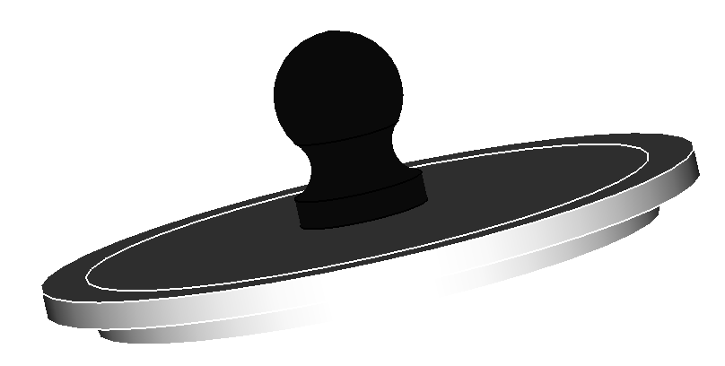

Assembly Guide
For this section you will need:
Parts
Tools
Material
Step 1: Motor holder
- Push the Servo motor on the 3d printed motor holder.

- Align the motor holder pillars with the tank base holes and fasten the assembly using M3x8mm hex socket counter sunk screw and use 2mm Hex key to tighten the screws. Make sure the smaller hole on the edge is in line with the servo motor wires

Step 2: Feed throat
- Align the Chute with the two holes and the smaller hole on the tank base. Then fasten the feed throat with M3x8mm hex socket counter sunk screw and tighten uisng Pozidriv PZ1 screw driver.

Step 3: Tank
- Fit the rotor on the servo motor shaft and fasten it using the M3x8mm hex socket counter sunk screw.

- screw the feed tank on to the tank base. Make sure the tabs fit in the slots.
Step 4: Cover
- Place the outer cover and inner cover on top of each other and align the holes with the cover handle. Then fasten them using the M3x8mm hex socket counter sunk screw on the cover handle hole.
{kind=link}
{kind=link}

- The lid can be placed ontop of the tank to cover the food. The Flexible Tube is then press fit on the fed throat.

You made it!